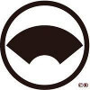
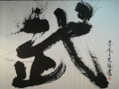

- Notre page Facebook
- La page Facebook internationale du Mondō Ryū Heihō 
-
Un article écrit par Julien Peltier, spécialiste des samouraï, auteur de plusieurs ouvrages et articles consacrés aux
célèbres guerriers japonais

-
Le site de l'association japonaise de recherche et de reconstitution de batailles samouraï

- International Martial Arts & Culture Federation website 
-
Nos fournisseurs